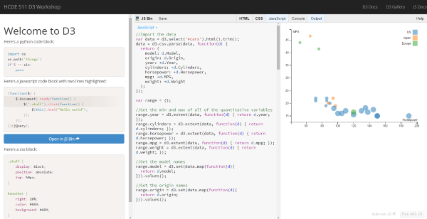

Introduction to D3
Get your feet wet with D3, a popular visualization library for the web.
Welcome
D3 is a widely-used and powerful library for creating visualizations on the web. It was created by Mike Bostock as a research project at Stanford University, and now has an active open source community.
We have written these tutorials to give people with little or no programming or web-development experience an idea of what making visualizations with D3 is like. For more background on web technologies, we recommend checking out the free online courses on Codecademy.
Quick Introduction
Rapid review of HTML and JS. For more background on web technology, try Codecademy's HTML and JavaScript courses.
Build a Bar Chart
Learn D3 basics by building a simple bar chart about cars.
Interactive Scatterplot
Create a scatterplot encoding several car variables, and see how to add legends and interactivity.
Older tutorials
These tutorials are from older iterations of this workshop.
HTML Tutorial
Get an introduction to HTML concepts.
JavaScript and D3
Basic JavaScript programming and introduction to D3 techniques.
Build a Hashtags Bar Chart
Make a simple bar chart about twitter hashtags using D3. Learn about scales and the "data join".
About
This D3 workshop was created by Michael Brooks and John Robinson for the HCDE 511 Information Visualization class. The tutorials use a combination of lecture instruction, live coding demonstration, and "do-it-yourself" exploration.
We ran the first version of this workshop in Spring 2014 using a combination of Powerpoint slides and JS Bin (for coding along with the slides). In Autumn 2014, we revised and reformatted the material into this website.
In this new format, you can follow the tutorial on the left side of the screen while the code is editable in JS Bin on the right side. This makes the workshop content more accessible and user-friendly, and, we hope, more useful.

The site was developed with Harp and Bootstrap. The source code is on GitHub.